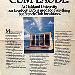

Location


Honeywell Ad for Oakland
 Oakland University [OU], Rochester, MI, USA.
Oakland University [OU], Rochester, MI, USA.
(northern Detroit suburb)
First Installed
December, 1978 (operational January, 1979)
Configuration
2 68/80 CPUs,
2 SCUs, 4MW 36-bit words MOS memory each,
1 IOM,
DN6678 front-end processor
9 MSU451 disks (157MB each)
2 PRU1200 printers
4 tape drives,
card reader & punch,
[Paul Amaranth] The end config had a couple of the 1G drives and at least a half dozen of the removable packs. I think they were 250M. I still have one sitting in my office - there were 12 platters in the pack. We ended up with a total of around 4G, I think.
Application areas
[Brian Henk] OU wanted to convert University applications (student records, payroll, accounts pay/rec) from an IBM 360 to a newer technology. Additionally the students wrote programs on punch cards and ran on a Burroughs B5500. Multics was selected because of a package deal, several Level-6s and other equipment was thrown into the deal by HIS. This was perhaps an attempt on HIS part to get a Multics site that could produce programmers for use by Ford and GM, which indeed it did.
Site Analysts
HIS SiteSA Greg Texada (and his pipe), Jim Wells(?)
Marketing
Tom Hinrichs
System Administrators
Bill Haga, Bill Watt, and Ken Byrd.
Notable developments
[Paul Amaranth] Part of the attraction of Multics was they would only have to have one computer for administrative work as well as academic. This actually worked out fairly well, but the conversion of the administrative programs from an IBM environment to Multics was not easy, particularly for run of the mill COBOL people. I think Oakland was one of the most active sites identifying errors in the COBOL compiler. I generally stayed far away from that code, the few times I was called in to look at something, I came away appalled. They were running a punched card system on a system designed for interactive use. I think some restructuring could have resulted in significant gains in efficiency and usability, but there was no one around who could do that. I converted most of the academic software, including Minitab, BMDP et al. USL did SPSS, but I think I covered most of the little stuff.
Final Shutdown
[Paul Amaranth] The shutdown was around '90, I think. On the shutdown day, our Operations manager killed the system, then mangled some of the config switches so it wouldn't boot. Bill Watt came into the room, noticed the changed switches, reset them properly, brought the system back up and then went through an orderly shutdown to bring the system to rest.
Anecdotes
File System Disaster
[Paul Amaranth] One of our System programmers (who shall remain nameless) screwed up big time by not fixing a known problem, which I seem to recall involved the backup dumper. We lost a volume, it couldn't be restored and many faculty lost a month of work. It was a terrible disaster and served to turn faculty opinion against Multics and started the search for other solutions.
Mysterious Crash
[Brian Henk] The SiteSA eventually found out through the grapevine that the a building maintenance person was on a ladder near one of the Multics boxes and his knee hit the power switch off. 'I quickly turned it back on' was his comment to someone. 'not quickly enough' was an often heard comment around the building for anything done 'quickly'. Power switches were covered w/ plastic guards by HIS/FE soon after.
Teleray Terminals Security Hack
[Brian Henk] OU installed Teleray terminals (9600 baud at that) with memory capture and execute ability. Unfortunately, the SysAdmins also had Teleray terminals. Someone figured out that by sending mail to the SysAdmin with embedded begin/end/execute escape characters could do anything, when the SysAdmin read the message. Then came canonicalized mailboxes.
PL/1 Run Unit
[Brian Henk] Several PL/1 source files had this command as the last line of the code.
call pl1 ("/udd...../this_programs_source_file.pl1");
Wow! And it worked... The purpose was to reset internal static variables. Darn clever, a bit brutal but clever. I think the run command may have been used for this purpose, but the re-compile was more impressive.
iox_ on Fire
[Brian Henk] One OLD, and I mean OLD, assembler I/O module on the IBM360 was rewritten to Multics PL/1. The IBM assembler code opened and searched a record file that was ordered by record number 1... N, iox_ was used to implement the IBM assembler using the same binary IO search idea using position and read to get to the record. Perhaps a re-thinking of this binary IO seek would have been a good idea. Seek and ye will find, (eventually).
Better Late Than Never...
[Brian Henk] Some clever students found out that Multics source files were available online. So they grabbed the dprint source and created a command that placed their own banner pages (with the necessary false dates and times) on a segment, then used the standard dprint to print it. This came in very handy when assignments were late. You could prove to the prof that you had in fact printed the necessary stuff before the deadline but it "must have got lost". All you had to do was remove the outermost banner pages from dprint and the fake ones were left. Ah Ted Koszinski would be proud.
[Thomas Hacker] The dprint story is a little different than how Brian tells it: A group of students spent a few years poring through the source code to learn more about the OS (and to look for some cute hacks to impress their friends). One time I was perusing the source code for dprint.pl1. I noticed (to my great surprise) that the queue time sent to the gate routine dprint_() was generated by a call to clock() made in ring 4! So, I modified dprint.pl1 to assign a strange value to the parameter, and ran off a small job. When I picked up my printout, it told me that the time queued was something like May 5, 1905! So I took it over to Bill Watt (the SysAdmin) and said something like "Does something look wrong in this banner page?" When he saw the date, he thought I had faked a page until I showed him the code. He dutifully reported the "bug" to Honeywell, who responded with a collective yawn.
[Bill Watt] Both dprint stories are correct -- students did create fake banner pages, and Tom did find that various dprint arguments were never validated before being passed to ring 1 daemons.
2001 a spaced oddity?
[Brian Henk] One of the Multics operators was named - Hal. Hal would place the corner of a stapler on the operator's console to avoid the noisy beeps. No wonder tape mounts took 30 minutes.
Configuration
[Paul Amaranth] We were on a minimal memory config, I think 4 Megawords/processor. It wasn't enough. I think HIS tended to sell systems that were underconfigured to Universities. Some sites had performance clauses in their purchase contracts that required HIS to upgrade the systems at low or no cost. OU was not one of them. We typically maxed out at around 40 users.
Initially, students submitted programs on card decks, although the focus changed significantly with a terminal room with 28 Telerays. The hard wired terminals were run at 4800/9600 baud.
Nobody ever did anything with the Level 6s, as far as I recall.
Laser Printing
[Paul Amaranth] One of the hacks I was pretty pleased with came about when we got a connection to the Merit network which connected a number of state universities (University of Michigan, Wayne State , etc). Part of the deal with this was that staff members received exchange accounts and Wayne State had a large laser printer hooked up. I hacked the printer source to set up a ring 3 print queue that sent the stuff down to Wayne to print off of my account. Then we would make a trip once a week to go pick it up and have lunch in Greektown. Until they phased the accounts out, we were running up charges of $50K/yr in funny money printing tens of thousands of pages. Oakland was nothing if not cheap.
AIM
Supposedly, Oakland used AIM to keep the students out of the source code.
Information from Brian Henk, Thomas Hacker, and Paul Amaranth.